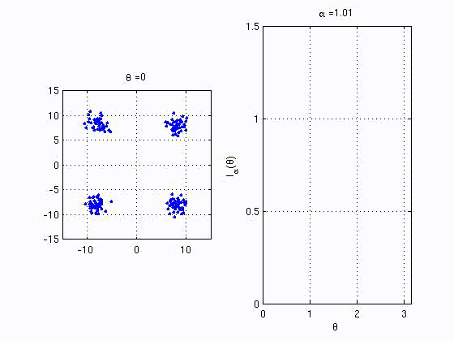
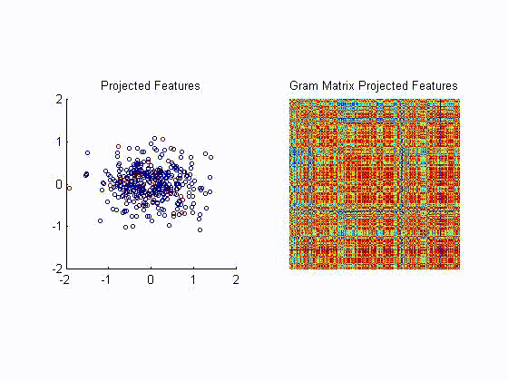
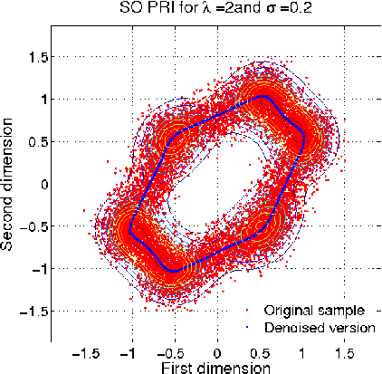

Luis Gonzalo Sánchez Giraldo::Research
Overview
RKHSs provide an elegant representation framework that generalizes
well-known linear algorithms. The mainstream of research devoted to the
construction of
positive definite kernels and algorithm variants the employ the kernel
based representation. More
recent efforts have moved towards exploring the use of
RKHSs in computing high order statistics of the data. Potential uses of
high order statistics are not limited to problems such as hypothesis
testing, but also provide means to the
creation of new learning algorithms that employ these quantities as
objective functions.
In the context of adaptive systems, information
theoretic learning investigates the uses of well-know quantities in
information theory as surrogate measures of performance for
task-specific measures such as mean squared error, probability of
misclassification error, and detection error. For instance, a measure
of mutual information between the input and the output of an adaptive
system can be used in learning the parameters of such system.
Nevertheless, to be able to adapt from experience, it is necessary to
estimate the information theoretic quantities directly from data. My
work has focused on investigating the relations between RKHSs and
information theoretic quantities to provide estimators of information
theoretic quantities that exploit the representational capabilities of
RKHSs. The proposed estimators can be regarded as statistics based on
reproducing kernels that can be applied to a variety of learning
algorithms based on information theoretic objective functions.
Information Theoretic Learning
- This work focuses on studying the properties of certain
functionals applied to positive definite matrices that expose similar
properties of an entropy functional Ref. By using positive definite kernels, we can estimate quantities with similar
properties of entropy functionals directly from data. The proposed
estimators of entropy using positive definite kernels bring the
representational advantages of kernel methods along with some nice
convergence properties; the rate of convergence can be independent of
the input space dimensionality. For testing independence, our
estimators improve upon other estimators such entropic graphs and the
recently proposed kernel based statistics. The animation below shows
the behaviour of one of the proposed quanties that behaves similar to
mutual information. The right plot is the analogue MI between the
variables corresponding to the horizontal and vertical axes in the left
plot.

- For metric learning Ref, we propose to minimize a kernel based analogue of conditional entropy between a label variable
and a given transformation of the input. The resulting metric is able
to preserve the class structure even after drastic reductions in
dimensionality and achieving state of the art results. The following
example, illustrates the ability of the proposed algortihm to unravel a
two dimensional projection of the data that preserves the label
information without requiring the samples to be lineraly separable. The
left plot is the resulting projection after each training iteration.
The right plot is tha resulting Gram matrix that shows how tha
algorithm unveils the block struture corresponding to the class
information.

- We have applied our metric learning algorithm to visualization of
high-dimensional neural data Ref. Namely, we visualize the motor cortex neuronal firing rates of a macaque during a center-out
reaching task, and local field potentials in the somatosensory cortex
of a rat during tactile stimulation of the forepaws. The obtained 2
dimensional projections preserve the natural topology of targets in the
reaching task, and the peripheral touch sites of the forepaws.
- Renyi's entropy of order 2 can be estimated using Parzen windows. Interestingly, this estimator can be efficiently approximated using a rank deficient decomposition of a
Gram matrix. Our work in Ref, utilizes this
approximation for unsupervised learning. The algorithm poses the
problem of unsupervised learning as a trade off between information
preservation and entropy minimization. Furthermore, in
Ref we propose a reproducing kernel Hilbert space (RKHS) formulation of this problem. In this case, we obtain an pseudo-convex
optimization problem that can be solved with techniques such sequential
minimal optimization (initially proposed for support vector machines).
The algorithm can be considered a support vector type algorithm in the
sense that the solution is expressed with a subset of the initial set
of data points Report. This approach compares favourably against other kernel-based feature extractors such as kernel PCA and kernel entropy
component analysis, with the advantage of expressing the solution as a
reduced data set.

- For non-rigid image registration, we proposed information
theoretic matching functions that are robust to noise and outliers
Ref_A Ref_B. Sets of points are represented by densities and aligned via a non-rigid transformation such that a measure of divergence is minimized. Namely, we use the Cauchy-Schwartz
divergence which computes the angle between densities in L2. The proposed matching algorithm performs well for various degrees of transformation and levels of noise.
Online Kernel-Based Learning
- Along with support vector machines, kernel principal component
analysis are among the most representative algorithms that exploit this
implicit representation. The kernel principal components are obtained
by solving eigenvalue problem involving a matrix of pairwise
evaluations of the input data samples called the Gram matrix. In signal
processing applications, data often arrives in an online fashion. We
proposed an online kernel PCA algorithm using a fixed point update rule
based on a Rayleigh quotient in the RKHS Ref. The fixed point update convergences faster than the generalized Hebbian learning
algorithm an it does not require setting a step size parameter.
- I have also taken part on the development of a kernel based
temporal difference learning algorithm Ref. This method has been applied in reinforcement learning to nonlinear
approximations of state-action value functions from which optimal
policies can be derived. A practical advantage of our approach is that
the relation between step size and eligibility traces is well
understood when normalized kernel functions are utilized allowing for
stable learning rates to be easily set. Moreover, there is no
requirement for parameter initialization and we have empirically
observed that it outperforms other conventional non-linear methods that
are based on temporal differences. This algorithm has been applied to
neural decoding in reinforcement learning-based brain machine
interfaces.
Last update: Feb 5,
2019